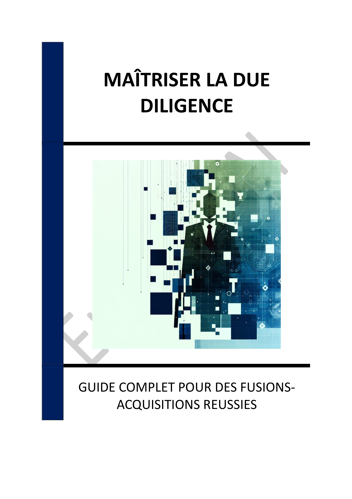

▶
Vitesse
++
+
=
-
--
INTRODUCTION - L'IMPORTANCE STRATÉGIQUE DE LA DUE DILIGENCE
Chapitre 1 - INTRODUCTION À LA DUE DILIGENCE
1.1 - Définition et objectifs de la due diligence
1.2 - Importance stratégique dans les fusions-acquisitions
1.3 - Les principales dimensions de la due diligence
Chapitre 2 - L'ANALYSE FINANCIÈRE
2.1 - Examen des états financiers
2.2 - Évaluation de la rentabilité et de la structure de la dette
2.3 - Identification des engagements hors bilan
Chapitre 3 - L'AUDIT JURIDIQUE
3.1 - Conformité légale et réglementaire
3.2 - Analyse des contrats et droits de propriété intellectuelle
3.3 - Identification des litiges en cours ou potentiels
Chapitre 4 - L'ANALYSE FISCALE
4.1 - Conséquences fiscales de la transaction
4.2 - Évaluation de la conformité des déclarations passées
4.3 - Optimisation de la structuration fiscale
Chapitre 5 - L'AUDIT COMMERCIAL ET OPÉRATIONNEL
5.1 - Position concurrentielle et portefeuille clients
5.2 - Efficacité des processus internes
5.3 - Capacité d'intégration post-acquisition
Chapitre 6 - L'ANALYSE TECHNOLOGIQUE
6.1 - Évaluation des systèmes d'information
6.2 - Cybersécurité et protection des données
6.3 - Impact des technologies émergentes
Chapitre 7 - PIÈGES COMMUNS LORS DE LA DUE DILIGENCE
7.1 - Manque de coordination entre les équipes
7.2 - Sous-estimation des risques cachés
7.3 - Négligence des aspects humains et culturels
Chapitre 8 - BONNES PRATIQUES POUR UNE DUE DILIGENCE RÉUSSIE
8.1 - Structuration efficace de la démarche
8.2 - Utilisation des outils technologiques
8.3 - Communication fluide entre les parties prenantes
CONCLUSION - SYNTHÈSE ET PERSPECTIVES
📄 Consulter les annexes du livre
Mentions légales